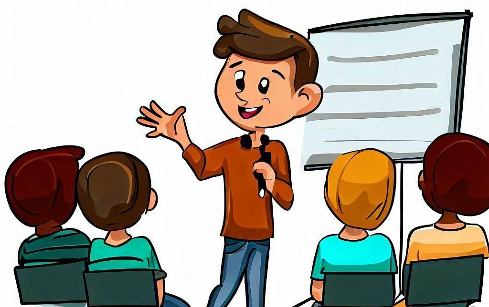

It´s time for the `live´!

Finally! It's time for the `live stream´. Your author is taking the stage. It's time for your presentation. Don't just read the profile. Explain it. Why did you choose that color palette? Which post was the hardest to write? You can even prepare a dramatic reading of one of the chosen excerpts. You can also dress up or bring something that belongs to your author.
Remember that in the project's Padlet there are a lot of tutorials and tips for giving an outstanding presentation. Don´t miss out on those tips👁️!